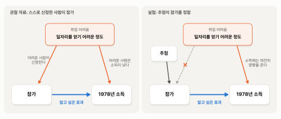

3. 엉뚱한 비교 상대 — 교란#
이 장 첫머리의 보고서는 요약의 둘째 줄에 이런 숫자를 적었습니다.
같은 참가자를 일반 인구 표본과 단순 비교하면 오히려 8,498달러 낮다. 참가자는 프로그램에 들어오기 전부터 소득이 낮던 사람들이다.
앞 절에서 본 실험의 답은 1,794달러였습니다. 프로그램이 소득을 올렸다는 것이죠. 그런데 같은 참가자를 다른 사람들과 비교하니 효과가 플러스 1,794달러에서 마이너스 8,498달러로, 크기도 방향도 완전히 달라졌습니다. 이 숫자를 그대로 해석하면 “프로그램에 참가했더니 소득이 8,498달러 줄었다”는 이상한 결론이 나옵니다.
미리 답부터 말하면, 비교 상대가 엉뚱했기 때문입니다. 계산은 틀리지 않았습니다. 참가자의 1978년 평균 소득 6,349달러에서 일반 인구의 평균 소득 14,847달러를 빼면 정확히 8,498달러 낮습니다. 문제는 일반 인구가 참가자의 “참가하지 않았다면”을 대신할 대역이 못 된다는 데 있습니다. 이 절에서는 비교 상대가 엉뚱하면 어떤 일이 생기는지를 일상의 예로 먼저 보고, 그 원인에 이름을 붙인 뒤, 보고서의 숫자로 돌아옵니다.
보충수업의 역설 — 비교 상대가 엉뚱할 때#
어느 학교에서 성적이 낮은 학생들을 위해 방과 후 보충수업을 열었습니다. 학기 말에 보니 보충수업을 들은 학생들의 시험 점수가 듣지 않은 학생들보다 평균 15점 낮았습니다. 보충수업이 오히려 성적을 떨어뜨린 걸까요?
그렇게 생각하는 사람은 없을 것입니다. 이 보충수업은 처음부터 성적이 낮은 학생들이 듣도록 연 것이기 때문입니다. 보충수업을 들은 학생들은 수업을 듣기 전부터 점수가 낮았고, 보충수업 덕분에 조금 올랐더라도 여전히 듣지 않은 학생들보다 낮을 수 있습니다. 15점의 차이는 대부분 보충수업의 효과가 아니라 원래부터 있던 차이입니다.
이런 일은 생각보다 흔합니다.
큰 병원의 사망률이 동네 의원보다 높다. 그러니 큰 병원은 위험하다? 아닙니다. 위중한 환자일수록 큰 병원으로 갑니다.
소방차가 많이 출동한 화재일수록 피해가 크다. 그러니 소방차가 피해를 키운다? 아닙니다. 큰불이 나면 소방차가 많이 옵니다.
우산을 들고 다니는 날에 교통사고가 많다. 그러니 우산이 사고를 부른다? 아닙니다. 비가 오면 우산도 들고 길도 미끄럽습니다.
세 예는 모두 구조가 같습니다. 처치를 받은 쪽(큰 병원에 간 환자, 소방차가 많이 온 화재, 우산을 든 날)과 받지 않은 쪽이 처음부터 다른 사람이고, 다른 상황이었습니다. 그래서 두 쪽의 결과 차이 가운데 일부는 처치 때문이 아니라 원래 달랐기 때문이고, 원래의 차이가 클수록 엉뚱한 결론이 나옵니다. 보충수업처럼 효과가 거꾸로 보이기까지 합니다.
누가 프로그램에 들어오나#
일자리 제공 프로그램도 보충수업과 같습니다. NSW는 일자리를 얻기 가장 어려운 사람들을 위한 프로그램이었습니다. 이 사람들을 일반 인구와 비교하면 어떨까요? 표 3-1은 앞 절의 표 2-1에 일반 인구 표본(CPS)의 열과 결과인 1978년 소득의 행을 더한 것입니다.
표 3-1. 참가자, 실험 대조군, 일반 인구의 특성 (평균, 소득은 1982년 달러)
특성 |
참가자 (185명) |
실험 대조군 (260명) |
일반 인구 CPS (15,992명) |
|---|---|---|---|
나이 |
25.8세 |
25.1세 |
33.2세 |
학력 |
10.3년 |
10.1년 |
12.0년 |
흑인 |
84% |
83% |
7% |
히스패닉 |
6% |
11% |
7% |
결혼 |
19% |
15% |
71% |
고교 미졸업 |
71% |
83% |
30% |
1974년 소득 |
2,096달러 |
2,107달러 |
14,017달러 |
1975년 소득 |
1,532달러 |
1,267달러 |
13,651달러 |
1974년에 소득이 없던 사람 |
71% |
75% |
12% |
1978년 소득 (결과) |
6,349달러 |
4,555달러 |
14,847달러 |
표에서 보듯이 앞의 두 열은 닮았는데, 셋째 열은 딴판입니다. 일반 인구는 참가자보다 일곱 살쯤 많고, 열에 일곱이 결혼했으며, 고등학교를 마친 사람이 대부분입니다. 가장 큰 차이는 참가 전 소득입니다. 1975년 평균 소득이 참가자는 1,532달러인데 일반 인구는 13,651달러로 9배 가까이 됩니다. 1974년에 소득이 전혀 없던 사람이 참가자는 열에 일곱이지만, 일반 인구는 열에 하나 남짓입니다.
이렇게 다른 사람들이니 1978년 소득도 다를 수밖에 없습니다. 일반 인구는 프로그램과 상관없이 원래 소득이 높은 사람들이고, 참가자는 프로그램 덕분에 소득이 올랐어도 여전히 그보다 한참 낮습니다. 8,498달러의 차이는 대부분 이 원래의 차이입니다. 프로그램의 효과도 그 안에 들어 있지만, 원래의 차이가 워낙 커서 따로 떼어 볼 수 없습니다. 앞 절의 비유로 말하면, 주연 배우와 키도 나이도 전혀 다른 사람을 대역으로 세운 것입니다.
💡 팁: AI가 “A 처치를 받은 그룹이 결과가 더 좋다(나쁘다)”는 보고서를 내놓으면, “A 처치 전에 두 그룹은 어떻게 달랐어?”라고 물어보세요. 처치 전의 차이가 크다면, 그 결과 차이를 A 처치의 효과로 해석하기 어렵습니다.
숨은 공통 원인 — 교란#
이 상황을 그림으로 그려 보면 무엇이 문제인지 한눈에 보입니다. 그림 3-1의 왼쪽 패널은 일반 인구와 비교할 때, 오른쪽 패널은 추첨 실험에서 화살표가 어떻게 이어지는지를 그린 것입니다.

그림 3-1. 왼쪽: 관찰 자료에서는 취업 어려움이 참가와 1978년 소득 양쪽에 화살표를 보낸다. 오른쪽: 추첨 실험에서는 추첨이 참가를 정하므로 취업 어려움에서 참가로 가는 화살표가 끊긴다.
그림에서 보듯이 왼쪽 패널에는 화살표가 세 개 있습니다. 우리가 알고 싶은 것은 아래의 파란 화살표, 즉 참가가 1978년 소득을 바꾸는 효과입니다. 그런데 위에서 내려오는 주황 화살표가 두 개 더 있습니다. 일자리를 얻기 어려운 정도, 곧 취업 어려움은 한편으로 사람을 프로그램에 신청하게 만들고, 다른 한편으로 그 사람의 소득을 낮춥니다. 그래서 일반 인구와 비교하면 참가자의 소득이 낮게 나옵니다. 이 낮은 소득은 파란 화살표, 곧 프로그램이 만든 것이 아닙니다. 프로그램이 소득을 올려 주었더라도, 참가자와 일반 인구 사이에 원래부터 있던 소득 차이가 그보다 크면 참가자의 소득은 여전히 낮게 보입니다.
이렇게 처치와 결과 양쪽에 영향을 주어 둘 사이의 관계를 실제와 다르게 보이게 만드는 것을 교란(confounding)이라고 부르고, 그 원인이 되는 요인을 교란 변수(confounder)라고 부릅니다. 이 자료에서는 취업 어려움이 교란 변수입니다. 앞의 예들에도 모두 교란 변수가 있었습니다. 보충수업에서는 원래 실력, 큰 병원에서는 환자의 위중함, 소방차에서는 불의 크기, 우산에서는 비입니다.
교란을 이야기할 때 빠지지 않는 고전적인 예가 하나 더 있습니다. 아이스크림이 많이 팔리는 날에는 물놀이 사고도 많이 납니다. 아이스크림이 사고를 부르는 걸까요? 둘 다 더운 날에 늘어날 뿐입니다. 더위가 아이스크림 판매와 물놀이 사고 양쪽에 화살표를 보내는 교란 변수입니다. 아이스크림 판매를 막는다고 사고가 줄지는 않겠죠.
이제 그림 3-1의 오른쪽 패널을 봅시다. 실험에서는 참가 여부를 추첨이 정합니다. 취업이 아무리 어려워도, 추첨에서 떨어지면 참가하지 못합니다. 그래서 취업 어려움에서 참가로 가는 화살표가 끊깁니다. 취업 어려움은 여전히 1978년 소득에 영향을 주지만, 추첨이 취업이 더 어려운 사람과 덜 어려운 사람을 양쪽에 고루 나눠 주었으니 두 그룹에 평균적으로 같은 영향을 줍니다. 취업이 어렵든 쉽든 참가할 확률이 같으니, 두 그룹의 평균 차이에는 파란 화살표만 남습니다. 추첨이 하는 일을 한 문장으로 말하면, 교란 변수에서 처치로 가는 화살표를 끊는 것입니다.
화살표가 거꾸로일 때 — 역인과#
비교를 엉뚱하게 만드는 것이 하나 더 있습니다. 화살표의 방향이 거꾸로인 경우입니다. 경찰관이 많은 동네일수록 범죄가 많다고 해서, 경찰관이 범죄를 부른다고 해석할 수는 없습니다. 범죄가 많은 동네에 경찰관을 더 보냈을 수 있으니까요. 꾸준히 운동하는 사람이 더 건강한 것도 운동 덕분만은 아닐 수 있습니다. 건강해야 꾸준히 운동할 수 있기도 하니까요. 횡단면 분석 장에서 본 역인과(reverse causality), 즉 원인과 결과의 방향이 거꾸로일 수 있는 관계입니다. 그 장에서는 혈압약을 먹는 사람의 혈압이 오히려 높게 나왔는데, 약이 혈압을 올려서가 아니라 혈압이 높은 사람이 약을 먹기 때문이었습니다.
이 자료의 8,498달러에도 거꾸로 된 화살표처럼 보이는 것이 있습니다. 보고서의 숫자를 그대로 해석하면 “참가하면 소득이 낮아진다”인데, 실제로 일어난 일은 “소득이 낮은 사람이 참가한다”였으니까요. 다만 여기서는 시간의 순서가 분명합니다. 1978년 소득은 참가가 정해지고 나서 한참 뒤의 소득이니, 1978년 소득이 참가를 정할 수는 없습니다. 참가 쪽으로 화살표를 보낸 것은 1978년 소득이 아니라 그 전부터 있던 취업 어려움이고, 그 취업 어려움이 1978년 소득에도 화살표를 보냅니다. 그래서 이 자료의 문제는 역인과가 아니라 교란이라고 부르는 것이 맞습니다.
원인을 결과보다 먼저 측정하는 것은 역인과를 막는 가장 단순한 방법입니다. 운동과 건강이라면, 지금 운동을 하는지 먼저 조사해 두고 몇 년 뒤에 건강을 재는 식입니다. 몇 년 뒤의 건강이 그 전의 운동을 정할 수는 없으니, 적어도 “건강해서 운동한다”는 거꾸로 된 화살표는 끊깁니다. 하지만 이 자료가 보여 주듯, 순서를 지켜도 교란은 막지 못합니다. 둘을 함께 막는 것은 추첨입니다. 참가를 추첨이 정하면, 취업 어려움도 결과도 참가를 정할 수 없습니다. 취업 어려움에서 오는 화살표도, 결과 쪽에서 거꾸로 오는 화살표도 끊기는 것입니다.
같은 문제, 세 이름#
교란과 거의 같은 문제가 분야에 따라 다른 이름으로도 불립니다. 뜻이 완전히 같지는 않습니다. 예를 들어 내생성은 앞 소절의 역인과까지 포함합니다. 논문이나 AI의 보고서에서 이 이름들을 마주칠 수 있으니 한 번 정리해 둡시다.
이름 |
주로 쓰는 분야 |
같은 문제를 보는 쪽 |
|---|---|---|
교란 |
통계학, 의학 |
처치와 결과 양쪽에 영향을 주는 제3의 요인이 있다 |
선택 편향 |
사회과학 전반 |
누가 처치를 받는지가 추첨이 아니라 스스로의 선택으로 정해진다 |
내생성 |
경제학 |
결과를 정하는 보이지 않는 요인과 처치 변수가 함께 움직인다 |
이 자료에서는 세 이름이 같은 것을 가리킵니다. 일자리를 얻기 어려운 사람들이 스스로 프로그램에 신청했다는 사실입니다. 통계학의 눈으로 보면 “취업 어려움”이라는 교란 변수가 있고, 사회과학의 눈으로 보면 참가자가 스스로를 골라 들어온 선택 편향(selection bias)이 있으며, 경제학의 눈으로 보면 소득을 결정하는 보이지 않는 요인과 참가 여부가 함께 움직이는 내생성(endogeneity)이 있습니다.
다중회귀분석 장에서 본 누락 변수 편향도 같은 문제를 회귀식 쪽에서 본 이름입니다. 여기서는 교란 변수가 회귀식에 빠져 있으니, \(\textit{treat}\)의 계수 −8,498달러 가운데 큰 몫은 프로그램이 만든 차이가 아니라 참가자와 일반 인구 사이에 원래부터 있던 소득 차이입니다. 그 몫이 워낙 커서 효과의 부호까지 뒤집어 놓은 것입니다.
표본이 커도 고쳐지지 않는다#
표 3-2는 보고서의 추정 결과 표 둘째 행의 회귀식을 상수항과 \(R^2\)까지 실은 것입니다.
표 3-2. 일반 인구와 단순 비교한 회귀 결과
변수 |
계수 |
표준오차 |
\(p\)값 |
|---|---|---|---|
상수항 |
14,847 |
76 |
< 0.001 |
\(\textit{treat}\) |
−8,498 |
712 |
< 0.001 |
주: 종속변수는 1978년 소득(달러), \(R^2\) = 0.009, \(n\) = 16,177. 상수항은 일반 인구의 평균 소득이다. 보고서가 싣지 않은 상수항과 \(R^2\)을 더했다.
표에서 보듯이 단순 비교의 표준오차는 712달러이고 \(p\)값은 0.001보다 작습니다. 95% 신뢰구간도 마이너스 9,893달러에서 마이너스 7,102달러로, 0에서 한참 떨어져 있습니다. 단순회귀분석 장에서 배운 대로라면 “아주 믿을 만한 차이”입니다. 그런데 이 숫자를 프로그램의 효과로 해석하면 틀립니다.
단순회귀분석 장과 다중회귀분석 장의 보고서가 한계에 빠짐없이 적어 둔 한 줄을 떠올려 봅시다. “이 결과는 상관이지 인과가 아니다.” 표준오차, \(p\)값, 신뢰구간이 알려 주는 것은 이 차이가 우연히 나온 것이 아니라는 데까지입니다. 참가와 낮은 소득이 함께 나타난다는 것은 믿을 만하지만, 참가 때문에 소득이 낮아졌는지는 이 숫자들이 말해 주지 않습니다. 그 한 줄이 경고하던 일이, 이 자료에서는 효과의 부호까지 뒤집는 모습으로 나타난 것입니다.
이것이 교란의 무서운 점입니다. 표준오차와 신뢰구간은 표본을 다시 뽑을 때 숫자가 얼마나 흔들리는지를 알려 줍니다. 비교 상대가 엉뚱해서 생긴 차이는 표본을 다시 뽑아도 그대로 다시 나옵니다. 일반 인구를 다시 뽑아도 여전히 참가자보다 소득이 높은 사람들이 뽑히니까요. 그래서 교란이 만든 차이는 흔들림 없이, 믿을 만해 보이는 모습으로 나타납니다. 표본을 늘리면 신뢰구간은 더 좁아지지만, 좁아진 구간이 가리키는 곳은 여전히 틀린 자리입니다.
미국의 선거 연구에서 이것을 보여 준 유명한 실험이 있습니다. 선거를 앞두고 유권자들에게 “투표하세요”라는 전화를 걸었는데, 누구에게 전화를 걸지를 추첨으로 정했습니다(Arceneaux, Gerber, & Green, 2006).[1] 대조군만 200만 명에 가까운 큰 실험이었습니다. 추첨으로 나눈 두 그룹을 비교하니 전화의 효과는 거의 없었습니다. 그런데 같은 자료에서 전화를 받은 사람과 받지 않은 사람을 비교하면, 전화를 받은 사람이 투표를 훨씬 많이 했습니다. 전화를 받는 사람은 원래 집에 잘 있고 걸려 온 전화를 꼬박꼬박 받는 사람일 수 있고, 그런 사람은 투표도 꼬박꼬박 할 수 있습니다. 표본이 그렇게 커도 엉뚱한 비교는 고쳐지지 않았습니다.
요약 — 이 절의 물음과 답
같은 참가자를 일반 인구와 비교하면 왜 소득이 8,498달러 낮게 나올까? 계산이 틀린 것이 아니라 비교 상대가 엉뚱했기 때문이다. 참가자는 프로그램에 들어오기 전부터 소득이 낮던 사람들이어서, 이 차이는 대부분 프로그램의 효과가 아니라 원래부터 있던 차이다.
그 원래의 차이는 어디에서 왔을까? 취업 어려움, 곧 일자리를 얻기 어려운 정도가 한편으로 사람을 프로그램에 신청하게 만들고, 다른 한편으로 그 사람의 소득을 낮췄다. 이렇게 처치와 결과 양쪽에 영향을 주어 둘 사이의 관계를 실제와 다르게 보이게 만드는 것을 교란이라고 하고, 그 원인이 되는 요인을 교란 변수라고 한다. 추첨 실험에서는 추첨이 참가를 정하므로 취업 어려움에서 참가로 가는 화살표가 끊긴다.
표본이 크고 신뢰구간이 0에서 한참 떨어져 있으면 믿어도 되지 않을까? 그렇지 않다. 교란이 만든 차이는 표본을 다시 뽑아도 그대로 다시 나오므로, 흔들림 없이 믿을 만해 보이는 모습으로 나타난다. 표본을 늘리면 신뢰구간은 좁아지지만, 좁아진 구간이 가리키는 곳은 여전히 틀린 자리다.